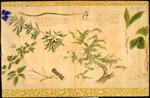

Katsuragawa Ho-ken, Yezo hon-zau no dzu (De natuurlijke historie van het eiland Yezo). Aquarellen op zijde, in harmonikavorm gebonden, albumbladen van 420 x 320 mm. Japan, circa 1820. -- (Jap. Cat. 1003 II)
De auteur is de zesde generatie van de beroemde familie Katsuragawa (zie nummer 93). Van het Nederlandse opperhoofd te Decima, Hendrik Doeff, had hij de naam ‘Willem Botanicus’ gekregen.
Op de hier opengeslagen bladzijden zijn te zien, links boven: de monnikskap (Aconitum sp.), daaronder de Astilbe thunbergii Miq., een van de voorouders van de in de tuin veel gekweekte hybriden van die plant. Het boompje is de Larix sp., de plant rechts boven is het Japanse lelietje-van-dalen (Convallaria keiskei Miq.). De bijschriften op de tekeningen vermelden de Japanse naam van iedere plant en geven een beschrijving in het Nederlands. Ze zijn door een Japanner, mogelijk de samensteller zelf, geschreven.
| vorige pagina | top pagina |